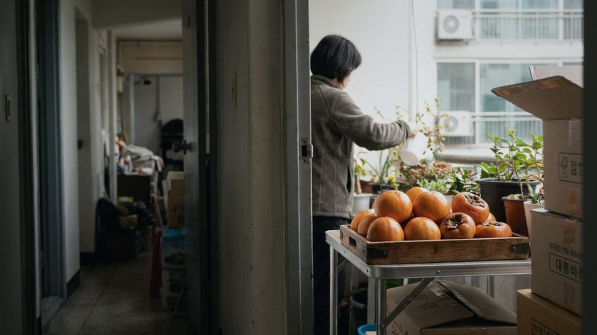
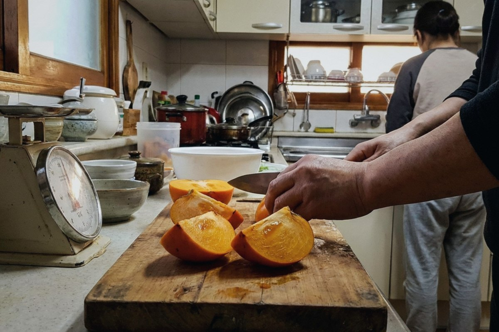
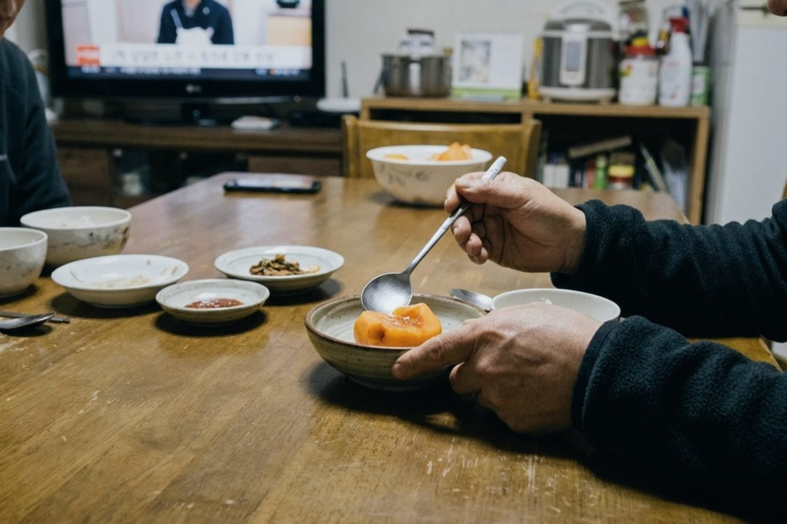

한 줄 결론: 대봉감 홍시를 한 번에 1~2개 먹어도 될까요? 칼륨과 베타카로틴이 든 제철 과일인 건 맞아요. 그런데 큰 홍시 1개는 당뇨 식사요법에서 쓰는 과일 1회분의 약 3~5배예요. 당뇨나 위장 때문에 망설인다면 1/4~1/3개씩 나눠 식후에 드시는 편이 안전해요.

대봉감은 떫은감 품종이라 후숙해서 홍시로 먹는 큰 감이에요. 보도에 따르면 1개 무게가 300~500g이나 돼요. 숫자는 공식 성분표 값만 모았어요.
| 항목 | 값 | 출처 |
|---|---|---|
| 단감(생것) 100g당 열량 | 57kcal | 식약처 식품영양성분DB |
| 단감(생것) 100g당 탄수화물 | 15.13g | 식약처 식품영양성분DB |
| 단감(생것) 100g당 당류 | 11.42g | 식약처 식품영양성분DB |
| 단감(생것) 100g당 칼륨 | 157mg | 식약처 식품영양성분DB |
| 100g당 당류: 홍시 vs 단감 | 12.32g vs 10.52g | 국가표준식품성분표(보도 인용) |
| 100g당 베타카로틴: 홍시 vs 단감 | 308㎍ vs 81㎍ | 국가표준식품성분표(보도 인용) |
대봉 홍시만 따로 잰 공식 값은 찾지 못해 단감과 홍시 값으로 대신했어요. 성분이 들어 있다는 것과 병을 막는 효과는 별개라서 효능보다 양을 먼저 봐야 해요.
당뇨 식품교환표 기준으로 약 3~5회분이에요.
고혈압·당뇨병 등록교육센터 자료는 하루 1,800kcal 미만이면 과일 1회, 이상이면 2회를 안내해요. 큰 홍시 하나로 하루치를 넘길 수 있다는 얘기예요.

아예 끊을 필요는 없어요. 다만 과일은 대부분 단순당이라 많이 먹으면 혈당이 빠르게 오를 수 있어요.
인슐린이나 혈당강하제를 쓴다면 양은 담당 의료진이나 영양사와 정하세요.
조심할 건 떫은맛 성분인 탄닌과 위석(위 안에서 음식물이 뭉친 덩어리)이에요. 건양대병원 소화기내과 교수 설명으로는 탄닌이 잘 익은 감에 약 0.2%, 덜 익은 감에 약 1.5% 들어 있어요.
위석은 위 수술을 받았거나 갑상선 기능 저하증, 당뇨병성 위 마비처럼 음식이 위에서 천천히 내려갈 때 잘 생겨요. 2026년 11월에는 곶감 16개를 먹은 74세 여성이 장폐색으로 두 번 수술받은 해외 사례가 보도됐어요. 위장 기능이 정상이라면 잘 익은 감을 적당히 먹는 건 보통 문제가 되지 않아요.
식후 더부룩함이 잦다면 식후 더부룩함·소화불량, 먼저 바꿀 식사 습관 5가지와 병원 갈 신호도 확인해 보세요.

| 상황 | 먹는 양·방법 | 피할 것 |
|---|---|---|
| 건강한 성인 | 식후에 적당량 | 빈속에 여러 개 |
| 당뇨 | 1회 1교환(큰 홍시 1/4개), 하루 1~2회 안에서 | 한 번에 1개 통째로 |
| 위 수술·위 배출 저하 | 조금씩, 의료진과 상의 | 가운데 심·씨 주위, 덜 익은 감 |
| 철분제 복용 | 약과 시간 분리 | 약과 같이 먹기 |
Q. 홍시가 단감보다 더 단가요?
A. 국가표준식품성분표를 인용한 보도에 따르면 100g당 당류가 홍시 12.32g, 단감 10.52g이에요.
Q. 곶감은 위석 걱정이 없나요?
A. 아니에요. 위 수술을 받았거나 위마비가 있다면 곶감도 주의하세요.
오늘 할 일은 하나예요. 대봉감 1개를 1/4로 나눠 담아 두세요. 겨울 식탁 관리는 노로바이러스 증상·예방법: 손소독제 말고 비누, 굴은 85℃에서 1분도 참고하세요.
2026년 11월 기준, 공식 자료 확인